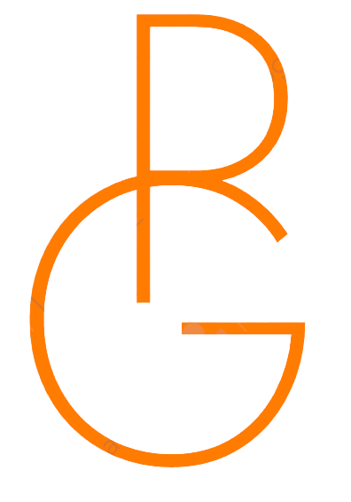
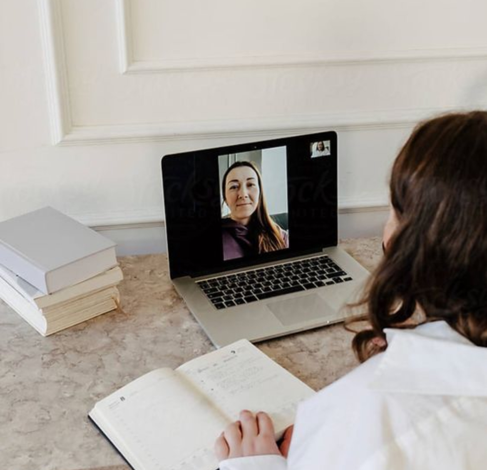

Paulina Gräfe
Ein kreatives Kurzretreat aus Coaching, Psychoedukation und Tufting – für Menschen, die sich selbst besser verstehen und eine besondere kreative Tätigkeit ausprobieren möchten.
Du erfährst, welche Grundgefühle es gibt, welche Funktion Gefühle haben und wie sie psychosomatisch wirken.
In einer individuellen Coachingsession widmen wir uns einem Gefühl, das dich gerade besonders beschäftigt – zum Beispiel Angst, Wut, Scham, Trauer oder Liebe. Wir erarbeiten gemeinsam, wie ein gesünderer Umgang damit konkret aussehen kann.
Währenddessen entsteht durch Tufting ein hochwertiges, haptisches Symbol für dein Gefühl – als sichtbare Erinnerung an deine neue Haltung.
Raus aus dem Kopf, rein ins Fühlen.
Etwas mit den eigenen Händen erschaffen, gestalten und sichtbar machen. Das Arbeiten mit den Händen wirkt dabei oft regulierend und ermöglicht einen anderen Zugang zu dem, was in uns vorgeht.
Für Menschen, die:
Gibt es ein Gefühl, das immer wieder mehr Raum einnimmt, als du möchtest?
Oder eines, das du kaum wahrnehmen kannst?
Dann ist dieser Abend eine Einladung, dein Gefühl besser zu verstehen – und einen neuen Umgang damit zu entwickeln.
Buche deinen Platz und erschaffe ein Symbol für eine neue Beziehung zu deinem Gefühl.
Anmeldung & Terminfindung
Nach deiner Anmeldung erhältst du vier mögliche Termine zur Auswahl. Der endgültige Termin wird anhand der Verfügbarkeiten aller Teilnehmenden festgelegt.
Das Kurzretreat findet in einer Gruppe von vier Personen statt und wird durchgeführt, sobald alle vier Plätze vergeben sind.
Zahlung
Die Teilnahmegebühr beträgt 299 € pro Person inklusive Coaching, Psychoedukation, Materialien und Tufting.
Die Zahlung erfolgt vorab per Überweisung nach Rechnungsstellung. Erst mit Zahlungseingang ist dein Platz verbindlich reserviert.
Stornierung & Nichterscheinen
Da das Format in einer kleinen Gruppe stattfindet und individuell geplant wird, ist die Anmeldung verbindlich.
Bei Nichterscheinen oder kurzfristiger Absage wird die Teilnahmegebühr in voller Höhe berechnet. Du kannst deinen Platz jedoch jederzeit an eine andere Person übertragen.